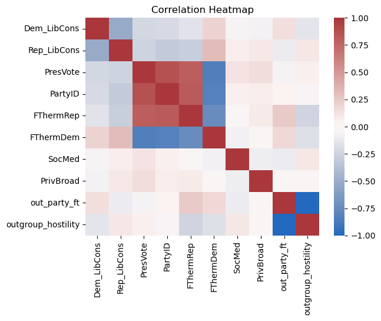
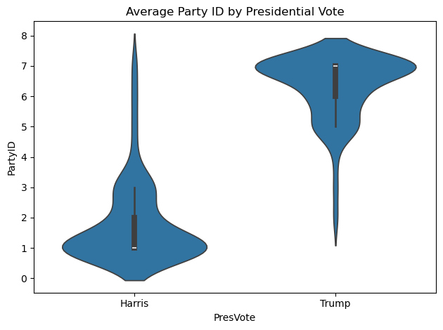
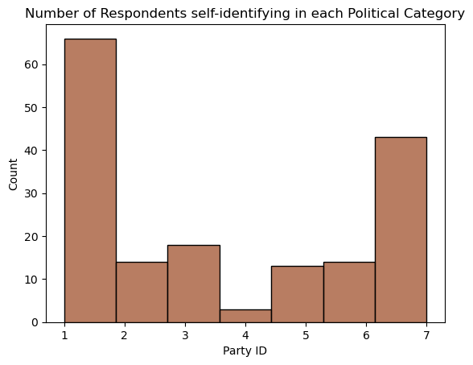
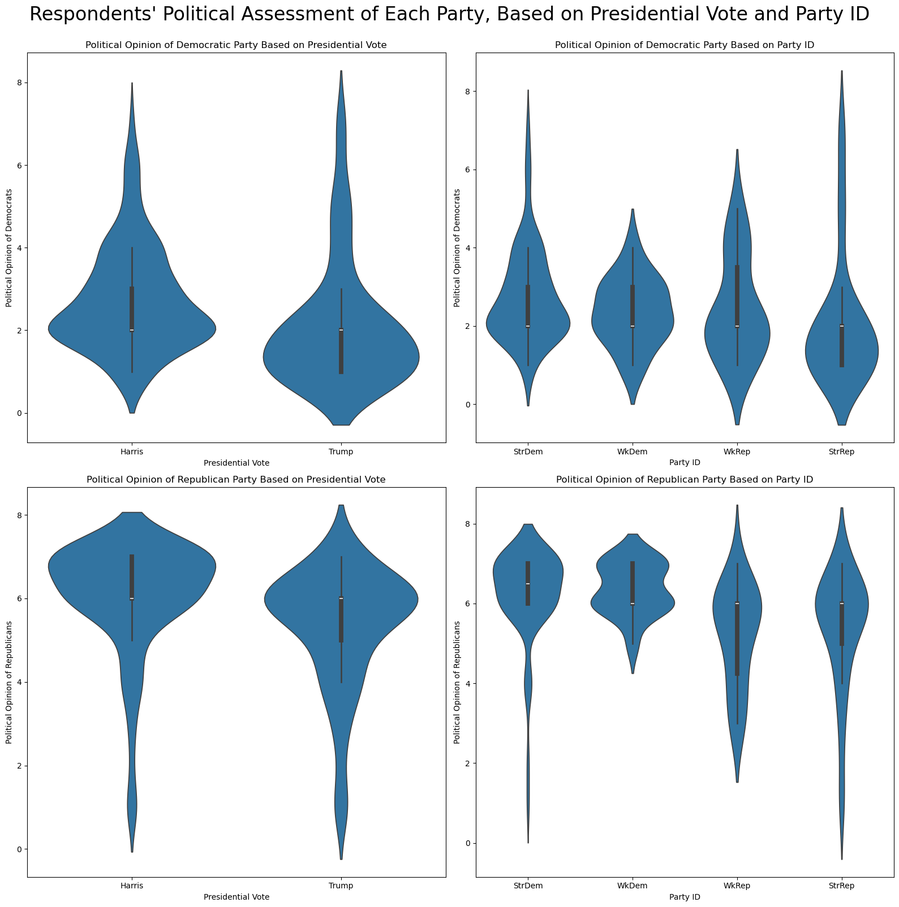
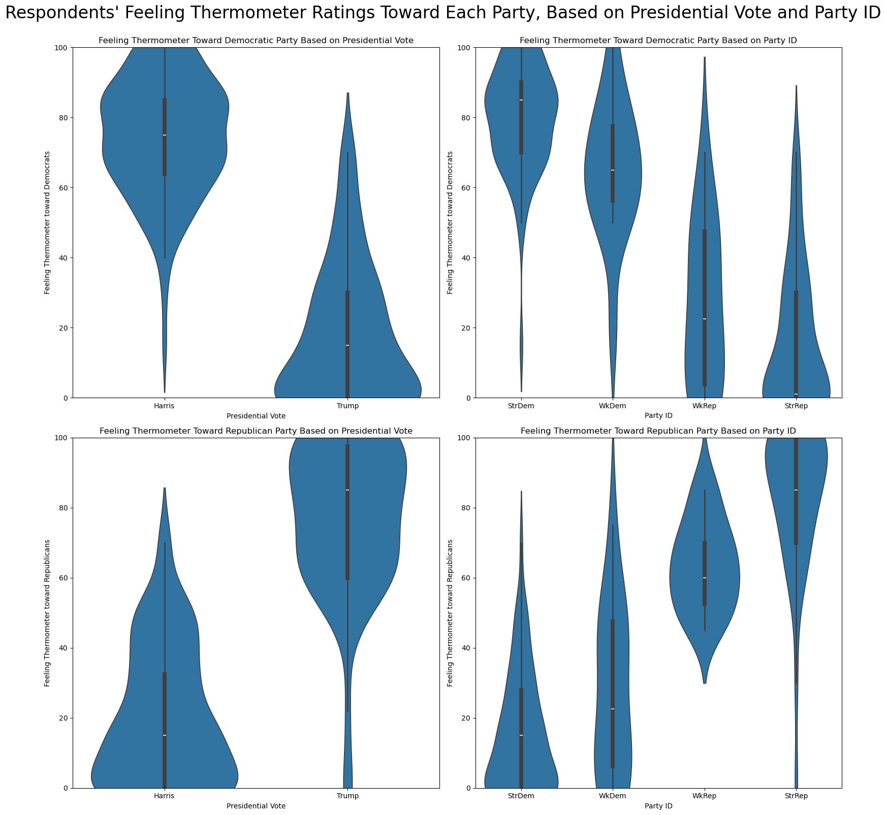

Code
import pandas as pd
import numpy as np
import seaborn as sns
import matplotlib.pyplot as pltFor this project, I want to discover predictors for affective polarization/out-group hostility in American politics. To accomplish this, I look at data from the 2024 American National Election Survey (ANES). The ANES conducts a nation-wide survey on approximately 5000 citizens of voting age. They ask a litany of questions, including demographics, their self-reported party identification, their vote choice, issue opinions, facts about their daily life, and much more. Below is a link to the ANES documentation, and I have also provided the pdf to the documentation in the folder.
In this report, I look specifically at the differences in polarization between the two major parties. I also will see if there is a correlation between the type of media an individual consumes and their level of polarization.
The United States political scene has grown increasingly polarized and divisive over the past decade. Here is a link to an article by Pew Research Center if you are interested the growth in US political polarization and what polarization looks like: https://www.pewresearch.org/politics/2014/06/12/political-polarization-in-the-american-public/
In my report, I want to avoid making any value judgements and just look at what the data shows.
Below, I import the packages I will be using and the ANES survey data. I want to look at the number of rows/columns (shape) of the data, as well as the top 5 rows of the data frame.
import pandas as pd
import numpy as np
import seaborn as sns
import matplotlib.pyplot as pltdta = pd.read_csv("anes2024.csv")
print(dta.shape)
dta.head()(5521, 1722)| version | V240001 | V200001 | V160001_orig | V240002a | V240002b | V240002c | V240003 | V240101a | V240101b | ... | V245009 | V245010 | V245011 | V245012 | V245013 | V245014 | V245015 | V245016 | V245017 | V245018 | |
|---|---|---|---|---|---|---|---|---|---|---|---|---|---|---|---|---|---|---|---|---|---|
| 0 | ANES2024TimeSeries_20250808 | 140001 | 200015 | 401318 | 2 | 2 | 2 | 1 | ... | -1 | -1. Inapplicable | -1 | -1 | -1 | -1 | -1 | -1 | -1 | -1 | ||
| 1 | ANES2024TimeSeries_20250808 | 140002 | 200022 | 300261 | 2 | 2 | 2 | 1 | ... | -1 | -1. Inapplicable | -1 | -1 | -1 | -1 | -1 | -1 | -1 | -1 | ||
| 2 | ANES2024TimeSeries_20250808 | 140003 | 200039 | 400181 | 2 | 2 | 2 | 1 | ... | -1 | -1. Inapplicable | -1 | -1 | -1 | -1 | -1 | -1 | -1 | -1 | ||
| 3 | ANES2024TimeSeries_20250808 | 140004 | 200046 | 300171 | 2 | 2 | 2 | 1 | ... | -1 | -1. Inapplicable | -1 | -1 | -1 | -1 | -1 | -1 | -1 | -1 | ||
| 4 | ANES2024TimeSeries_20250808 | 140005 | 200053 | 405145 | 2 | 2 | 2 | 1 | ... | -1 | -1. Inapplicable | -1 | -1 | -1 | -1 | -1 | -1 | -1 | -1 |
5 rows × 1722 columns
Below, I choose the variables I want to use for the report. These variables are an individual’s vote in the Presidential Election, Party ID, their feelings towards each political party, their judgements of how liberal/conservative they think each party is, how many days per week they spend consuming new via social media, and how many days per week they spend consuming news through private broadcasting new channels.
For the Presidential vote variable, 1 represents a vote for Kamala Harris and 2 represents a vote for Donald Trump. The Party ID variable is on a 7-point scale, with 1 representing a strong Democrat, 2 representing a weak Democrat, 3 representing an Democrat-leaning independent, 4 representing a true independent, 5 representing a Republican-leaning independent, 6 representing a weak Republican, and 7 representing a strong Republican. The respondent’s feelings towards each political party are captured in “feeling thermometers,” in which the respondent rates their feeling towards the party on a scale from 0-100, with 0 being bad/cold and 100 being warm/good. The variables on how liberal/conservative the respondent thinks each party is is done on a 7-point scale in a similar way to Party ID, except with 1 representing very liberal and 7 representing very conservative. The final two variables are self-explanatory. They take on whole numbers from 1-7 corresponding to how many days per week on average the respondent spends engaging with a certain type of news media.
After I filtered for these ANES variables, I wanted to construct a variable representing the individual’s out-group hostility. To create this variable, I determined each row’s political affiliation, took their feeling thermometer score for the opposite party (out_party_ft), and subtracted it from 100 to get the inverse feeling thermometer score (outgroup_hostility). I then filtered out every row that has a negative value in any column. This is because in the ANES data, negative values correspond with non-responses. I also filter out any respondents who voted for a candidate other than Donald Trump or Kamala Harris.
filt_dta = dta[['V241183', 'V241184', 'V241039', 'V241227x', 'V241167', 'V241166', 'V242406', 'V242402']]
filt_dta.dtypesV241183 int64
V241184 int64
V241039 int64
V241227x int64
V241167 int64
V241166 int64
V242406 int64
V242402 int64
dtype: objectfilt_dta = filt_dta.rename(columns = {
# 'V241465x': 'Education', # V241465x
# 'V241567x': 'HH_Inc', # V241566x
# 'V242172': 'ImmIssImp',
'V241183': 'Dem_LibCons',
'V241184': 'Rep_LibCons',
# 'V241731': 'RemDem',
# 'V241738': 'WashCorr',
'V241039': 'PresVote',
'V241227x': 'PartyID',
'V241167': 'FThermRep',
'V241166': 'FThermDem',
'V242406': 'SocMed',
'V242402': 'PrivBroad'
})
def out_party_ft(row):
if row['PartyID'] in [1, 2, 3]:
return row['FThermRep']
elif row['PartyID'] in [5, 6, 7]:
return row['FThermDem']
else:
return None
filt_dta = filt_dta.dropna()
filt_dta = filt_dta[(filt_dta >= 0).all(axis=1)]
filt_dta = filt_dta[filt_dta['PresVote'] <= 2]
filt_dta['out_party_ft'] = filt_dta.apply(out_party_ft, axis=1)
filt_dta['outgroup_hostility'] = 100 - filt_dta['out_party_ft']
print(filt_dta.shape)
filt_dta.head()(171, 10)| Dem_LibCons | Rep_LibCons | PresVote | PartyID | FThermRep | FThermDem | SocMed | PrivBroad | out_party_ft | outgroup_hostility | |
|---|---|---|---|---|---|---|---|---|---|---|
| 39 | 3 | 7 | 1 | 1 | 0 | 85 | 0 | 6 | 0.0 | 100.0 |
| 40 | 4 | 7 | 2 | 3 | 70 | 70 | 5 | 6 | 70.0 | 30.0 |
| 97 | 2 | 7 | 1 | 1 | 15 | 60 | 7 | 0 | 15.0 | 85.0 |
| 179 | 1 | 6 | 2 | 5 | 60 | 15 | 7 | 7 | 15.0 | 85.0 |
| 235 | 2 | 7 | 1 | 2 | 50 | 50 | 3 | 0 | 50.0 | 50.0 |
After applying the filters to the data frame, you can see all the data we have looks good. There are no n/a values or values below zero. However, as you can see, the data frame now only has 171 rows after applying all the filters. This will present problems when I try to find any significant correlations between any of the variables.
To help get an idea of the correlations between the variables, I created a correlation heatmap below. This will help give an idea of which relationships are most worth exploring.
corr = filt_dta.corr(numeric_only=True)
sns.heatmap(corr, annot=False, cmap="vlag", center=0)
plt.title("Correlation Heatmap")
plt.show()
Now, as you can see, there are some very strong relationships shown in this heatmap. Most of these are to be expected. For example, since the PartyID variable goes from 1 (strong liberal) to 7 (strong conservative), we would expect to see a strong positive relationship with the feeling thermometer towards the Republican Party and a strong negative relationship with the feeling thermometer towards the Democratic Party.
Outside of the obvious correlations, none really stick out. One relationship that still appears interesting is that between the a person’s party ID and their valuation of the political leanings of both parties. The negative relationship on both suggests that people who self-identify as more conservative tend to think that both political parties are less conservative on average.
It does not appear as though one party is more polarized or exhibits more out-group hostility than the other.
First, we want to see how strong the relationship between Party ID and Presidential Vote is. For this visualization, I use a violin plot to show both the means and distributions of each group.
ax = sns.violinplot(
x='PresVote',
y='PartyID',
data=filt_dta,
)
ticks = ["Harris", "Trump"]
ax.set(xticks=range(len(ticks)), xticklabels=ticks)
ax.set_title("Average Party ID by Presidential Vote")
plt.tight_layout()
plt.show()
As expected, there is a very strong relationship between Presidential Vote and Party ID. Interestingly, there are some outliers, which indicates that some people listed themselves as “Strong Republicans” and voted for Kamala Harris, and some people listed themselves as “Strong Democrats” and voted for Donald Trump. I think it is safe to ignore these outliers, as survey questionnaires can be subject to people accidentally choosing an answer they did not intend.
As you can see, the bulk of the distribution for Trump voters is around “Strong Republican” and the bulk of the distribution for Harris voters is around “Strong Democrat.” The two distributions look almost like mirror images of each other, though if you really squint, it looks like there is slightly more clustering at “Strong Republican” among Trump voters than there is at “Strong Democrat” among Harris voters.
This graph could suggest that a large number of respondents self-identified as either “Strong Democrat” or “Strong Republican.” To explore this further, I produce a bar chart of the counts of respondents falling in each category along the Party ID scale.
ax = sns.histplot(data=filt_dta, x="PartyID", color='sienna', bins = 7)
ax.set_title("Number of Respondents self-identifying in each Political Category")
ax.set_xlabel("Party ID")
plt.show()
As you can see, the assumption from the violin plot was correct, as there are much more “Strong Democrats” and “Strong Republicans” than any other Party ID. These two plots provide valuable context for the following plots.
Next, I want to explore the differences between Democrats’ and Republicans’ assessments of each party’s political leanings. This is because I wonder how much this political polarization bleeds into the differences in each party’s defintions of the terms “liberal” and “conservative.” I will be looking for significant differences in these distributions between Democrats and Republicans.
For this analysis, I create violin plots using both the respondent’s Presidential Vote and their self-reported Party ID. When using the Party ID variable, I want to ignore the responses of independents, so I choose to only include Weak/Strong Democrats and Weak/Strong Republicans. The variables representing assessments of each party’s leanings take a scale from 1-7, with 1 representing “strongly liberal” and 7 representing “strongly conservative.”
ticks2 = ["StrDem", "WkDem", "WkRep", "StrRep"]
exPID_dta = filt_dta[(filt_dta['PartyID'] < 3) | (filt_dta['PartyID'] > 5)]
fig, ax = plt.subplots(2, 2, figsize=(16, 16), sharey=False)
sns.violinplot(
x='PresVote',
y='Dem_LibCons',
data=filt_dta,
ax=ax[0, 0]
)
ax[0, 0].set_title("Political Opinion of Democratic Party Based on Presidential Vote")
ax[0, 0].set_xlabel("Presidential Vote")
ax[0, 0].set_ylabel("Political Opinion of Democrats")
ax[0, 0].set(xticks=range(len(ticks)), xticklabels=ticks)
sns.violinplot(
x='PartyID',
y='Dem_LibCons',
data=exPID_dta,
ax=ax[0, 1]
)
ax[0, 1].set_title("Political Opinion of Democratic Party Based on Party ID")
ax[0, 1].set_xlabel("Party ID")
ax[0, 1].set_ylabel("Political Opinion of Democrats")
ax[0, 1].set(xticks=range(len(ticks2)), xticklabels=ticks2)
sns.violinplot(
x='PresVote',
y='Rep_LibCons',
data=filt_dta,
ax=ax[1, 0]
)
ax[1, 0].set_title("Political Opinion of Republican Party Based on Presidential Vote")
ax[1, 0].set_xlabel("Presidential Vote")
ax[1, 0].set_ylabel("Political Opinion of Republicans")
ax[1, 0].set(xticks=range(len(ticks)), xticklabels=ticks)
sns.violinplot(
x='PartyID',
y='Rep_LibCons',
data=exPID_dta,
ax=ax[1, 1]
)
ax[1, 1].set_title("Political Opinion of Republican Party Based on Party ID")
ax[1, 1].set_xlabel("Party ID")
ax[1, 1].set_ylabel("Political Opinion of Republicans")
ax[1, 1].set(xticks=range(len(ticks2)), xticklabels=ticks2)
fig.suptitle("Respondents' Political Assessment of Each Party, Based on Presidential Vote and Party ID", fontsize = 24, y = 1)
plt.tight_layout()
plt.show()
Based on the above violin plots, it appears as though Presidential Vote choice has a stronger influence on a person’s evaluation of the political parties on a liberal-conservative scale. Interestingly, it appears as though Weak Republicans have the widest distribution in their political opinion of both parties.
Next, I want to do a similar analysis, this time using feeling thermometers as the dependent variable. Feeling thermometers represent the respondent’s feelings towards a particular party on a scale from 0-100, with 0 representing extreme dislike and 100 representing extreme like.
I use the same design as before with violin plots, since I am interested in the means of each group, the distributions of each group, and comparison between the groups.
fig, ax = plt.subplots(2, 2, figsize=(16, 16), sharey=False)
sns.violinplot(
x='PresVote',
y='FThermDem',
data=filt_dta,
ax=ax[0, 0]
)
ax[0, 0].set_title("Feeling Thermometer Toward Democratic Party Based on Presidential Vote")
ax[0, 0].set_xlabel("Presidential Vote")
ax[0, 0].set_ylabel("Feeling Thermometer toward Democrats")
ax[0, 0].set(xticks=range(len(ticks)), xticklabels=ticks)
sns.violinplot(
x='PartyID',
y='FThermDem',
data=exPID_dta,
ax=ax[0, 1]
)
ax[0, 1].set_title("Feeling Thermometer Toward Democratic Party Based on Party ID")
ax[0, 1].set_xlabel("Party ID")
ax[0, 1].set_ylabel("Feeling Thermometer toward Democrats")
ax[0, 1].set(xticks=range(len(ticks2)), xticklabels=ticks2)
sns.violinplot(
x='PresVote',
y='FThermRep',
data=filt_dta,
ax=ax[1, 0]
)
ax[1, 0].set_title("Feeling Thermometer Toward Republican Party Based on Presidential Vote")
ax[1, 0].set_xlabel("Presidential Vote")
ax[1, 0].set_ylabel("Feeling Thermometer toward Republicans")
ax[1, 0].set(xticks=range(len(ticks)), xticklabels=ticks)
sns.violinplot(
x='PartyID',
y='FThermRep',
data=exPID_dta,
ax=ax[1, 1]
)
ax[1, 1].set_title("Feeling Thermometer Toward Republican Party Based on Party ID")
ax[1, 1].set_xlabel("Party ID")
ax[1, 1].set_ylabel("Feeling Thermometer toward Republicans")
ax[1, 1].set(xticks=range(len(ticks2)), xticklabels=ticks2)
for a in ax.flat:
a.set_ylim(bottom=0)
a.set_ylim(top=100)
fig.suptitle("Respondents' Feeling Thermometer Ratings Toward Each Party, Based on Presidential Vote and Party ID", fontsize = 24, y = 1)
plt.tight_layout()
plt.show()
As expected, there are clear differences in each party’s feelings towards the other. Looking into this further, it seems as though the average feeling of Trump voters towards their own party is higher than the average feeling of Harris voters towards their own party. The average feeling thermometer score of Trump voters towards the Republican Party seems to be around an 85-90 while the average feeling thermometer score of Harris voters towards the Democratic Party seems to be around a 75.
Interestingly, it seems as though in both cases, the distribution in the feeling thermometers is wider when the respondent is discussing the opposing party, specifically among the “weak Democrats” and “weak Republicans.” This suggests that a lot of this observed polarization comes more from hate of the opposing party than from love of their own party.
This is the main reason why, back in the data section, I created the “out-group hostility” variable, which only captures the inverse feeling thermometer of each respondent’s feelings towards the opposing party. Based on the correlation matrix heatmap, it appears as though there is a positive correlation between outgroup hostility and days spent consuming news through social media.
To explore this relationship further, I use a regression plot visual to show this relationship. Since the x-variable is discrete whole numbers, I “jitter” the data points to make the graph appear more organic.
plt.figure(figsize=(8, 6)) # Optional: adjust figure size
ax = sns.regplot(x='SocMed', y='outgroup_hostility', data=filt_dta, x_jitter=0.15, scatter_kws={'alpha': 0.2})
ax.set_xlabel("Social Media News Days")
ax.set_ylabel("Out-Group Hostility")
ax.set_title("Social Media News Consumption and Out-Group Hostility")
plt.tight_layout()
plt.show()
This regression plot shows a very weak, likely insignificant relationship between days spent per week consuming news through social media and out-group hostility. As you can see, the line is practically horizontal
While there are inconclusive results from the exploration of the effect of social media news consumption on out-group hostility, this analysis still produced interesting results. One such finding was that polarization tends to come principally in the form of out-group hostility rather than in-group love. Another interesting finding was that Democrats tend to label the Republican Party as more conservative than Republicans do, and Republicans tend to label the Democratic Party as more Liberal than Democrats do.
One limitation of this study is the small sample size. This led to less significant results in the regression, and also does not provide the strongest data for the previous violin plots. Also, the ANES data may be subject to nonresponse bias. In my data cleaning process, I remove all rows where an individual did not respond to a certain survey question. There is evidence to suggest that people on the political extremes are more likely to complete political surveys. On top of this, I also removed all rows of individuals who voted for a third party candidate in the Presidential Election. This is another way in which the data could have been biased towards the overrepresentation of people on the political extremes.
In addition, I am not a fan of the ANES self-reported Party ID variable. I believe they could use better words to replace “strong” and “weak,” since these words have inherent value judgements. For example, someone may not be fully on-board with the Republican Party Platform, but sees the word “weak” and does not want that label. Furthermore, the self-reported Party ID variable seems to assume people who don’t identify with either party fall in between the two parties. It fails accurately capture people who lean further left than the Democratic Party or people who lean further right than the Republican Party. These people are often grouped in with the Democrat/Republican-leaning independents.
One element my analysis does not capture is populism. Many political scientists cite this current polarized political climate as a symptom of populism in American politics. Future studies could explore any potential relationships between populist attitudes and out-group hostility.